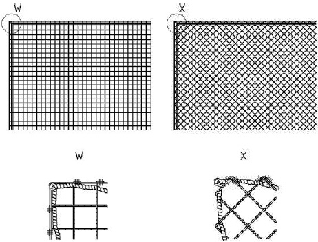
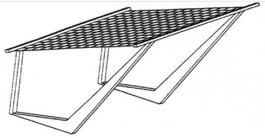
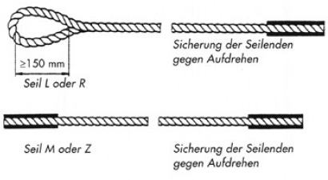
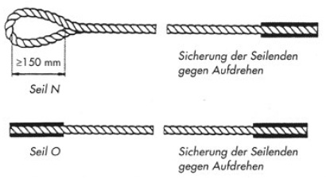

Für den Einsatz stehen der Unternehmerin und dem Unternehmer Schutznetze (Sicherheitsnetze) z. B. vom System S (siehe Abb. 2) oder vom System T (siehe Abb. 3) zur Verfügung.
Schutznetze (Sicherheitsnetze) vom System S (Netze mit Randseil) werden z. B. im Hallenbau eingesetzt.
Schutznetze (Sicherheitsnetze) vom System T (Netze in Konsolen für horizontale Verwendung) werden z. B. im Hochbau anstelle von Fanggerüsten eingesetzt.

Abb. 2 Schutznetz (Sicherheitsnetz) System S (Netz mit Randseil)

Abb. 3 Schutznetz (Sicherheitsnetz) System T (Netz in Konsolen für horizontale Verwendung)
Normgerechte einsträngige Aufhängeseile (siehe Abb. 4) weisen eine Bruchkraft von mindestens 30,0 kN auf. Normgerechte zweisträngige Aufhängeseile weisen eine Bruchkraft von mindestens 15,0 kN auf.

Abb. 4 Beispiele für Aufhängeseile
Normgerechte Kopplungsseile weisen mindestens eine Bruchkraft von 7,5 kN auf.
| Hinweis |
| Der Nachweis der Bruchkraft der Aufhänge- bzw. Kopplungsseile kann z. B. durch ein Prüf- bzw. Werkstoffzeugnis auf der Baustelle geführt werden. |
Traversenseile, die zum Verringern des Netzdurchhanges in ein Auffangnetz parallel zum Netzrand eingezogen werden und mit dem Randseil verbunden sind, weisen eine Bruchkraft von mindestens 30,0 kN auf.

Abb. 5 Beispiele für Kopplungsseile
Nach § 3 des Produktsicherheitsgesetzes "Allgemeine Anforderungen an die Bereitstellung von Produkten auf dem Markt" darf der Hersteller nur Produkte auf dem Markt bereitstellen, die zur Gewährleistung der Sicherheit mit den erforderlichen Kennzeichnungen oder Gefahrenhinweisen versehen sind.
An Schutznetzen (Sicherheitsnetzen) sind folgende Angaben deutlich erkennbar und dauerhaft anzubringen:
Tabelle 1 Kennzeichnungsbeispiel eines Schutznetzes (Sicherheitsnetzes)
| Mustermann | Hersteller |
| DIN EN 1263-1 | Schutznetz (Sicherheitsnetz) erfüllt die Anforderungen der Norm |
| 30987426 | Seriennummer des Netzes |
| S | Schutznetzsystem gemäß Norm |
| A2 | Netzklasse gemäß Norm |
| Q | Maschenanordnung parallel zum Netzrand |
| 100 | Maschenweite 100 mm |
| 10 x 20 | Netzgröße 10 m x 20 m |
| Artikel 4711 | Artikelnummer des Herstellers |
| 1/20 | Herstellung im Januar 2020 |
| 36 J | Mindest-Energieaufnahmevermögen der Prüfmaschine 36 J |
Dauerhafte Kennzeichnungen sind z. B. zu erreichen durch eingenähte oder eingenietete Etiketten bzw. Scheiben aus Kunststoff, die ohne Beschädigung nicht aus dem Netz entfernt werden können.
Die Seriennummer auf dem Label ist dieselbe Nummer, die sich auf den Plomben der Prüfmaschen befindet und an der Plombe am Netz.
Für Schutznetze (Sicherheitsnetze) stellt der Hersteller Gebrauchsanleitungen zur Verfügung.
In der Gebrauchsanleitung müssen Angaben mindestens enthalten sein über:
In der Gebrauchsanleitung ist außerdem darauf hinzuweisen, dass Schutznetze (Sicherheitsnetze) und Netzzubehör, die durch den Absturz einer Person oder eines Gegenstandes beansprucht worden sind, nur nach Prüfung und Freigabe durch eine fachkundige Person wieder eingesetzt werden dürfen.